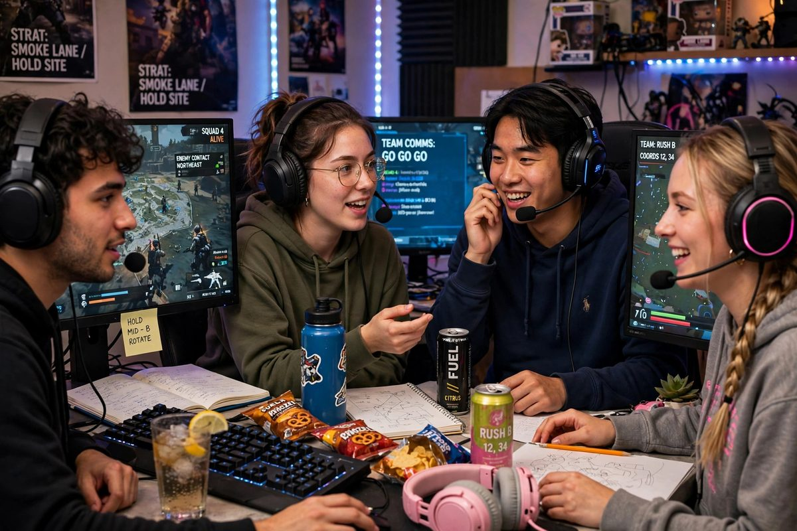

Squad Voice Communication in PUBG on PC: Setup & Callouts

Good aim wins duels, but clear communication wins squad matches. This guide shows you how to set up voice chat in PUBG on PC and how to make callouts that your teammates can act on instantly.
Setting Up Voice Chat in PUBG
PUBG has built-in voice chat for your team and for nearby players. Open Settings, go to the Sound section, and check that Voice Chat is enabled and your microphone and headset are selected correctly. Set your voice chat mode to Push to Talk if you play in a noisy room, or to Open Mic if you have a quiet setup and a headset microphone. The default push-to-talk key is T, but you can change it to a mouse side button or another key that is easy to reach during a fight. Test your microphone in a quiet lobby before your first match, and ask a teammate if you sound clear. If your teammates cannot hear you, check that Windows has given PUBG permission to use your microphone and that the correct input device is selected.
Push to Talk vs Open Mic
Push to Talk is the safer choice for most players. You press a key only when you want to speak, so background noise, music, and keyboard sounds do not reach your team. It takes a little practice to hold the key while aiming and moving, so choose a key that does not interfere with your movement keys. Open Mic is more convenient because you can talk hands-free, but it can also transmit every sound in your room, which distracts your squad during quiet moments. If you use Open Mic, set a sensible microphone sensitivity threshold so soft background sounds do not trigger it, and mute yourself when you need to talk to someone in your room. In ranked play, Push to Talk is usually the better option because it keeps comms clean and focused. Whichever mode you choose, tell your squad at the start of the match so they know how to reach you and what to expect.
Clear Callouts That Win Fights
A good callout is short, specific, and actionable. Say what you see, where it is, and what you want the team to do. Instead of saying "enemy over there", say "one enemy, north-west, behind the red house, 100 metres". Use compass directions, landmarks, and distances, and use the in-game marker system to ping a location when you can. Call out the number of enemies when you know it, because "one" and "a full squad" need very different responses. Use simple words for positions: "roof", "window", "behind the rock", "pushing left". Avoid long stories during a fight; save the detail for after the fight is over. If you are knocked down, call out who knocked you, from where, and whether it is safe for a teammate to revive you. Good callouts also include timing: "rotating now", "need ammo", "healing, cover me". Practise this structure until it becomes automatic.
Callouts for Loot, Rotations and the Zone
Voice chat is not only for fights. Call out useful loot so your squad does not waste time searching the same building: "level 3 vest here", "8x scope on me", "need 5.56 ammo". Share your plan before you move, because a squad that rotates together survives longer than four players moving separately. Say where you are going, which route you will take, and when you are leaving. Watch the zone timer and remind the team early: "zone moves in 30 seconds, we need a car". If you spot a vehicle, call its location and condition so the driver can plan. When the circle shrinks, agree on a final position together rather than letting each player pick a different spot. The player with the best view should keep talking, updating the team as enemies move, while the others listen and respond briefly. Short confirmations such as "copy", "on my way", and "holding" keep everyone in sync without filling the channel with noise.
Common Voice Chat Problems and Fixes
If voice chat stops working, work through the basics in order. First, check that your headset is plugged in and selected as both the input and output device in Windows and in PUBG. Second, check that you have not muted yourself or your teammates by accident, and that the voice chat volume is turned up. Third, restart the game if the problem started mid-session, since audio devices sometimes disconnect when a headset is unplugged and plugged back in. If your microphone sounds too quiet, increase its volume in Windows sound settings and move it closer to your mouth. If you hear echo, use headphones instead of speakers. Many squads also use Discord alongside the game, which can be more reliable; agree on which app you will use before the match.
Golden rule: Talk less, say more. One clear callout such as "two enemies, east, behind the wall" helps your squad far more than a minute of excited shouting. Stay calm, even when a fight goes badly.
| Situation | Good Callout | Weak Callout |
|---|---|---|
| Enemy spotted | One enemy, 210 south-west, roof | He is over there somewhere |
| Need help | Knocked, behind blue house, safe to revive | Help, help, help |
| Rotating | Moving to the compound north, now | Let us go somewhere |
| Loot shared | Level 3 helmet here, on my mark | There is stuff here |
Frequently Asked Questions
Why can my squad not hear me in PUBG on PC?
Check that the correct microphone is selected in PUBG and in Windows, that voice chat is enabled, and that you are using the right push-to-talk key. Also check Windows microphone permissions for PUBG, and test the mic in another app to confirm it works.
Should I use in-game voice chat or Discord?
Both work well. In-game chat is best for random squads because everyone can hear you. Discord is often clearer and more reliable for a regular squad, and it keeps working in the lobby between matches.
What is the best push-to-talk key?
There is no single best key. Many players use T, a mouse side button, or Caps Lock. Choose a key you can press without lifting your fingers from WASD, and test it in a few matches before changing it again.
Download PUBG Now
Get the official game from the official stores. PUBG on PC is free to play on Steam; PUBG Mobile is available on Google Play and the App Store.